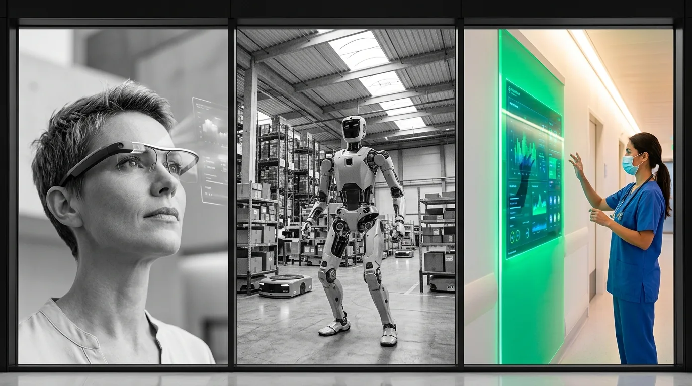
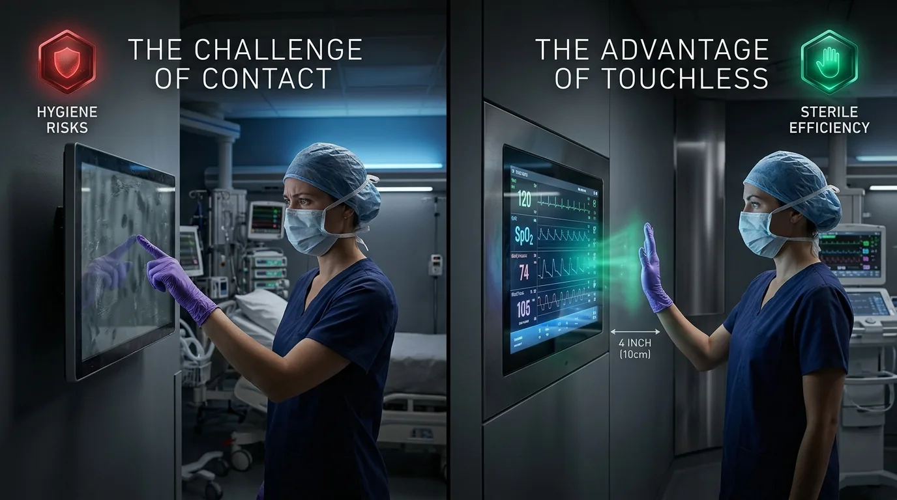
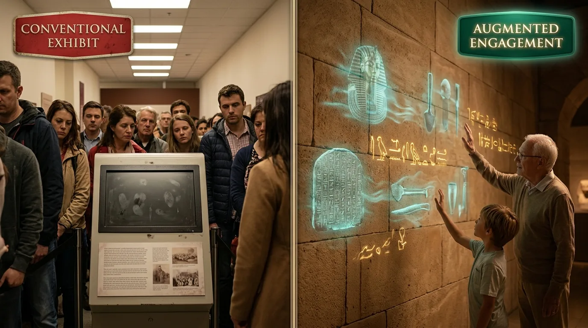
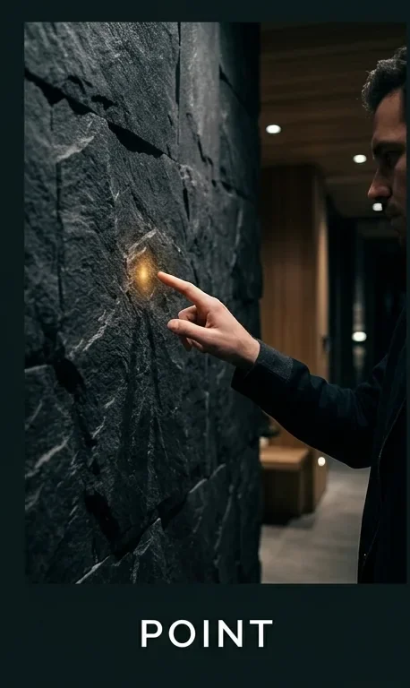
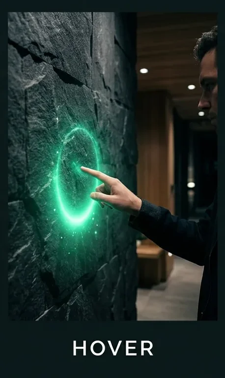
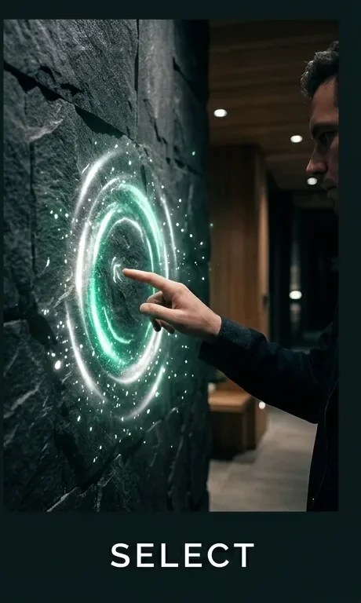

Layer 01 · Computer Vision Engine
SurfaceWare™
The computer-vision engine that senses gesture with pixel-perfect, deterministic accuracy — no cloud, no probabilistic guesswork.
Hoververse transforms walls, glass, counters, displays and public spaces into intelligent touchless interfaces — the SurfaceWare UI (SUI), our alternative to the legacy mouse-and-screen GUI. SurfaceWare™ senses the gesture; Hover OS renders the content it acts on. No screens to touch. No devices to wear. No training required.

Headsets, glasses, and wearables. Confined to one user at a time, requiring worn hardware and individual configuration.
Autonomous mobile systems navigating physical space. Complex mechanics requiring specialized industrial maintenance.
Ambient spatial computing embedded directly into architecture. Touchless, zero wearables, zero kiosks, multi-user by default.
The problem we built Hover OS to solve
Ask the people who run public, clinical or high-traffic spaces what's broken, and the same problems come up — no matter the industry.
Shared touchscreens, kiosks and tablets get touched by hundreds of strangers a day. People hesitate, wipe their hands, or skip the interaction altogether.
See Hover SR → Infection control & EVS
In healthcare especially, a touchscreen passed between patients, visitors and staff is a documented cross-contamination vector — one more thing to disinfect, track and worry about.
See Hover Health → Brand, marketing & visitor experience
Off-the-shelf kiosks and tablet mounts run the same generic template whether you're a hospital, a museum or a flagship store — with no way to make the interaction feel like your brand, your space, your visitors.
See Solutions → Architecture, design & real estateKiosks, poles, mounts and screens interrupt the architecture they're installed in — clashing with the design intent of the space instead of disappearing into it.
See Why Hoververse →Hover OS was built to remove all four — turning the surfaces already in your space into the interface, with nothing new to mount, touch or clean.
One natural motion
Every Hoververse experience is built around a simple, gesture-based computing model that people understand instinctively. Natural gestures are the only input — Hover OS reads each one, determines intent, and translates it into action.

Point naturally toward content. Nothing to hold, nothing to wear, nothing to learn.

Hover OS recognizes intent, confirming explicit attention — no tap, no instructions, no training.

The action executes instantly and contact-free — driving your existing app exactly as a select would. Every gesture can also be captured as an analytics signal or automation trigger.
No instructions. No controller. No app. No touchscreen.
Healthcare · our primary focus
While ambient AI transforms clinical documentation, Hover Health is the application we're building on Hover OS to modernize the physical interface — the touchless infrastructure that bridges digital intelligence and the clinical environment.
Built for shared spaces
One platform across healthcare, culture, retail and public infrastructure — all touchless, deterministic and heads-up.
Touchless workflow infrastructure for the AI-enabled hospital, designed to reduce contamination vectors while enabling natural interaction with clinical systems. We're building it with design partners now.
Co-develop Hover Health →Immersive heads-up experiences that disappear into architecture. Preserve environments while increasing visitor engagement.
Explore Living Heritage →An application we're designing to turn physical spaces into measurable digital experiences — capturing interaction analytics without requiring customers to download anything.
Co-develop Hover SR →Wayfinding, transit information and citizen engagement delivered through touchless surfaces in high-traffic public environments.
Talk to us →Why enterprise organizations choose Hoververse
Everything executes on local silicon at the edge.
Frames process in volatile memory and are discarded.
Works over the displays and projectors you already own.
Standards-native rendering — no SDK rewrite.
Nothing to hold, wear, touch, download or charge.
Privacy is a property of the architecture, not a policy.
Shared, simultaneous interaction in open space.
No kiosks bolted to the wall — every experience runs on the architecture already there and reflects your brand, not a generic template.
Real-time health and connectivity for every device, across every site, from one dashboard.
Point any device at a new experience URL in seconds — no site visit required.
Push Hover OS and SurfaceWare updates on your schedule, with instant rollback.
Tune sensitivity, license and decommission any unit without a truck roll.
The Hoververse platform
The computer-vision engine that senses gesture with pixel-perfect, deterministic accuracy — no cloud, no probabilistic guesswork.
The headless runtime that renders your existing web apps on any surface — no SDK, no API, no gesture logic to learn.
The one place to provision, monitor and manage your entire fleet of headless devices, across every site.
The next computing paradigm
Mainframe gave way to the desktop. Desktop gave way to the smartphone in every pocket. Each shift didn't just change how people compute — it expanded who could, and where. Spatial computing is next, and it reaches further than any device-based category before it: into shared spaces, autonomous systems, and rooms with no device at all.
Each era didn't replace the one before it — it expanded who could compute, and where.
Illustrative scale, not exact figures.
"An evolution from mobile computing into spatial computing — computing that extends beyond the screens — the kind of change that came with the smartphone."
Cathy Hackl · futurist & author of "Spatial Computing"
Why Hoververse
Request a demo
See deterministic, contact-free interaction on your own walls, glass and counters. Our solutions team will co-create a pilot built on SurfaceWare™ and Hover OS.